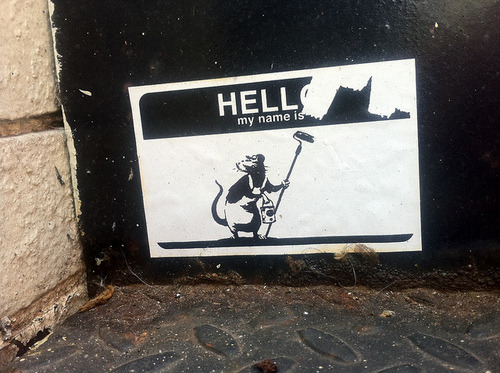

02-13-2014 9:56PM (ET)

Back in 2012 I was involved in a discussion on the NIST SHA3 discussion list about possible names for the standard. It might seem obvious that SHA3 should be called SHA3, but SHA3 has several output sizes: 224, 256, 384, and 512 bits.
One proposal, which was suggested, and evidently adopted as the official name, was SHA3-[output size]. I objected to this naming convention on the following grounds:
Meaning: SHA3 is not necessary more secure that SHA2. We may discover a critical break in SHA3 and will need to communicate the idea that SHA3 is not better than SHA2. Higher numbers imply better, names are value neutral.
Uniqueness: SHA3 is not an unambiguous search string. There is a hash function named SHA-384 which is likely to be referred to in code as SHA384 (hyphens are forbidden in functions names in python see 5). This name collision will cause problems with 'find and replace' code changes.
Readability: SHA3 may become something that you don't want in your code base due to a successful attack. Programmers may use various aliases for SHA3 (SHA3_encryptor, SHA3512, SHA512_3, etc). Doing string searches to audit code bases for uses of SHA3 is complicated by it's similarity with SHA2. More importantly attempting to read code to understand what hash function is being used would be helped by a very distinctive name.
Typos: Having different hash functions that are only one or two characters away from each other will almost certainly result in security failures as a result of typos. For example in the past we saw a typo cause the 'The Debian OpenSSL Disaster'.
Hyphens are bad: There is a whole class of interesting failure modes when ever you use a hyphen in name read by a computer:
hyphens are used as the subtract operator in many programming languages (hyphens named variables do not play well with ruby or python). What does a programmer do when they can't name a variable SHA-3-512? Do they use SHA3512? See objection 2.
Regex matching: Many programmers will match these strings using regex. They shouldn't. but they will because Ruby and perl-like languages make it too easy to pass up. The composition of letters, hyphen, numbers is likely to result in interesting bugs as hyphens are a special character in regex and need to be escaped.
I proposed that we should choose a string which is: unique, easily searchable, and unlikely to be confused by autocomplete or a code search tool. While creating a fool-proof hash name is impossible, we should try to make it fool-resistant.
I proposed four rules:
There should always be a "typo difference" of at least two characters between each name.
Truncation from one name to another should never result in a valid name (avoiding regex, find-and-replace, accidental backspace and copy-paste bugs).
A simple transposition of two characters within the name should not result in another valid name. One of the most common typos and one that human pattern recognition is terrible at finding.
The names when read aloud should have a distinctive unique and obvious pronunciation to avoid confusion in voice conversations.
Since at this point KECCAK had been announced as the winner of the SHA3 contest, I proposed the following name: SHAKE[output bits], so SHAKE224, SHAKE256, SHAKE284, SHAKE512.
It received some interest on the mailing list but I didn't think much was going to come of it. SHA3-x was the most obvious name and despite my objections had a number of advantages. I was certainly, and pleasantly surprised when John Kelsey of NIST announced that SHA3 would be two algorithms. One would be a drop in replacement for SHA2 and named SHA3 and the other would allow secure output truncation and be called SHAKE256 and SHAKE512.
For the record I see nothing that officially credits me with this name and it is obvious enough that someone could have independently discovered it, but searching the NIST mailing list I am the first and only person to have suggested this name, so I think it is likely that I have named a NIST standard.